|
2016 Report on the State of the PLAN 
Note: For all photos in the report, refer to This Flickr Album for high resolution images of teach.
4. REPLENISHMENT VESSEL DEVELOPMENTS
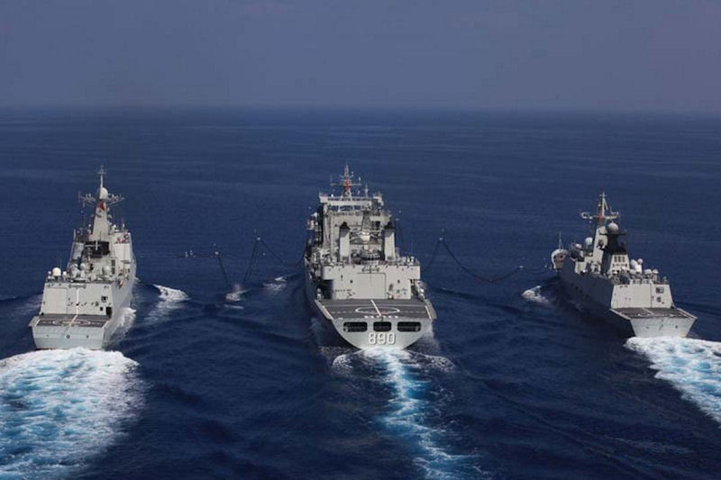
Type 903/4 Replenishment/Stores Ships: They always have such a vessel with the task force that they send on anti-piracy missions, and other long distance operations, which now include the Mediterannean, the South Atlantic, the Indian Ocean, and trips into the Eastern Pacific. The Type 903 and Type 904 are representative of these newer indegenous classes that the PLAN is building. They are medium sized replenishment vessels. The 903 is a replinishment tanker, that is capable of resupplying vessels on the high seas, the 904 is a stores ship used for resupllying bases and islands. The 903 displaces over 23,000 tons, while the 904 displaces about 15,000 tons. There are now nine Type 903 replenishment vessels, two of which were launched this year. There are now five 904 resupply/stores vessels, two of which were launched in 2015. 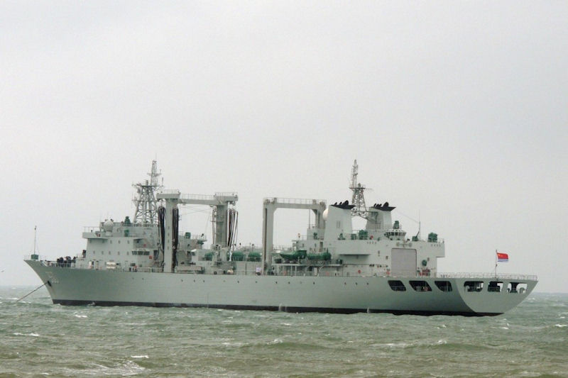 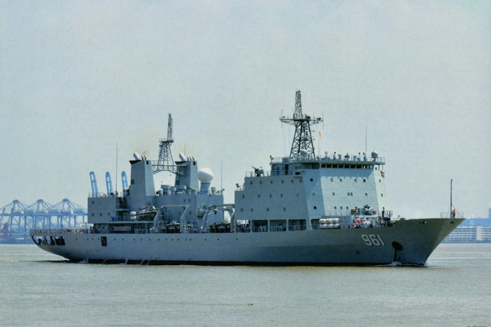 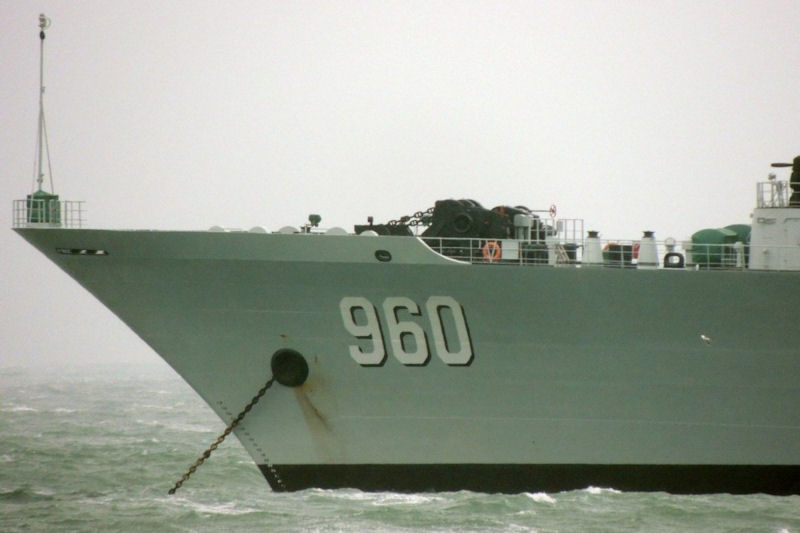 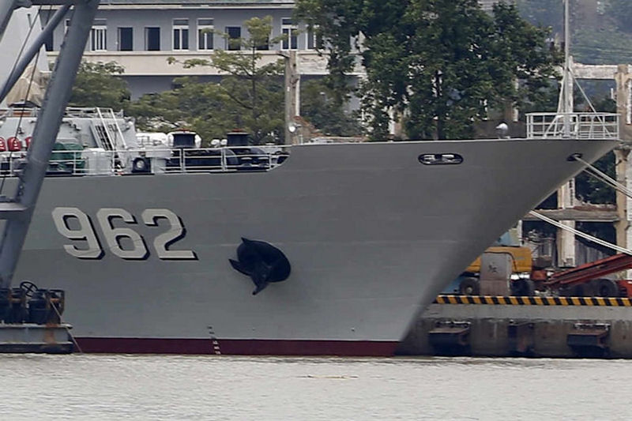 China expects to build several more of each of these vessels...and they improve them as they go. Both of these vessels are on what the Chinese call their "A" version of the vessels, having started with 903 and 904, and now building 903A and 904A.
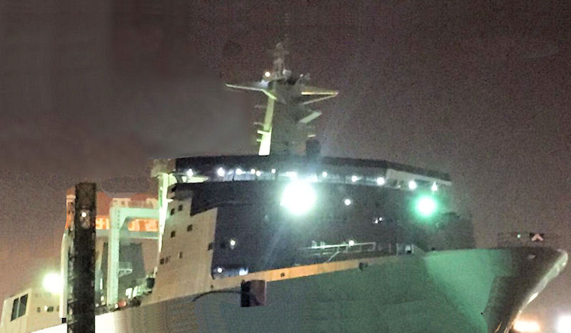
Type 901 Large, Fast Replishment Ships: This ship will displase in excess of 50,000 tons and be able to maintain a speed to allow them to keep up with the PLAN's carrier group(s). With four LPDs already in service (and plans to build at least six of them), and particularly with one carrier already in service (and definitive plans to have at least three if not mnore) it is likely that three or four of these vessels may be contemplated. Clearly the PLAN will need several of these vessels. 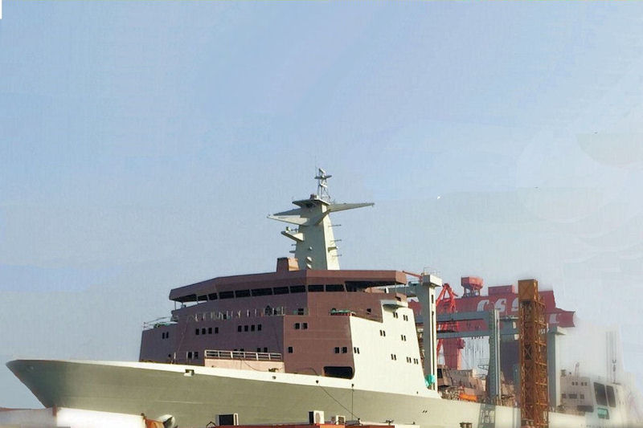 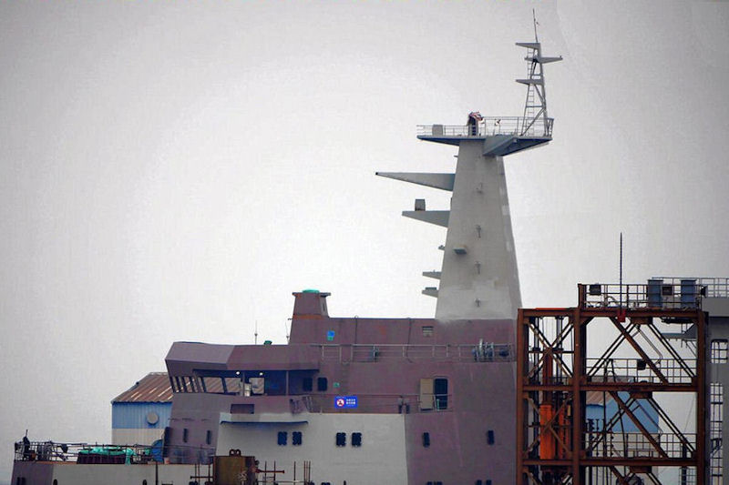 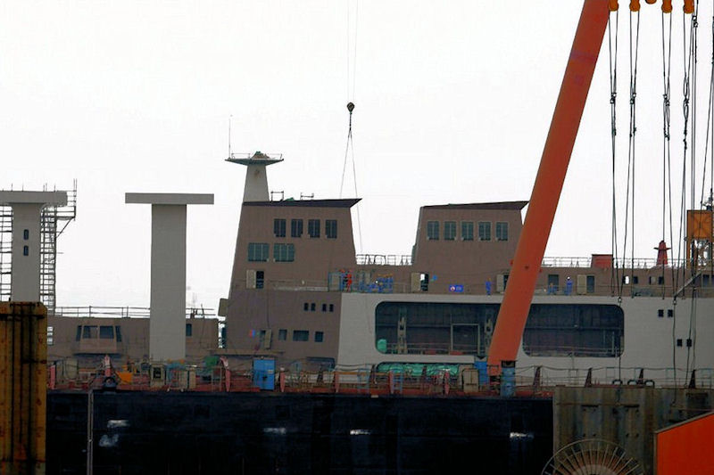 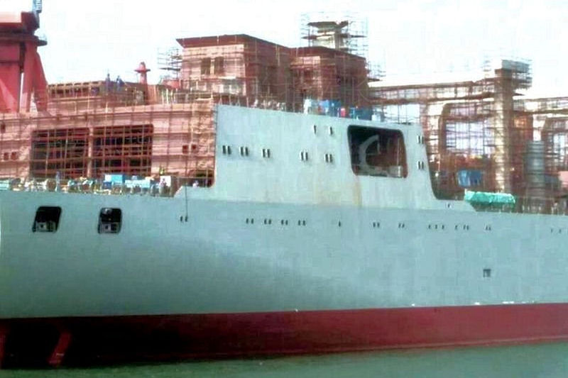 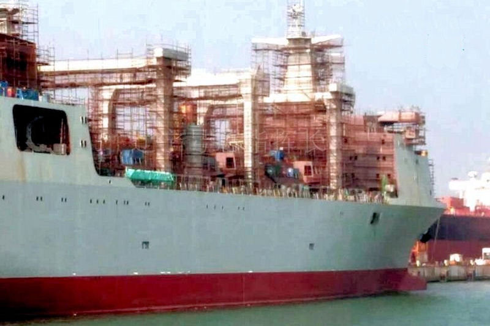 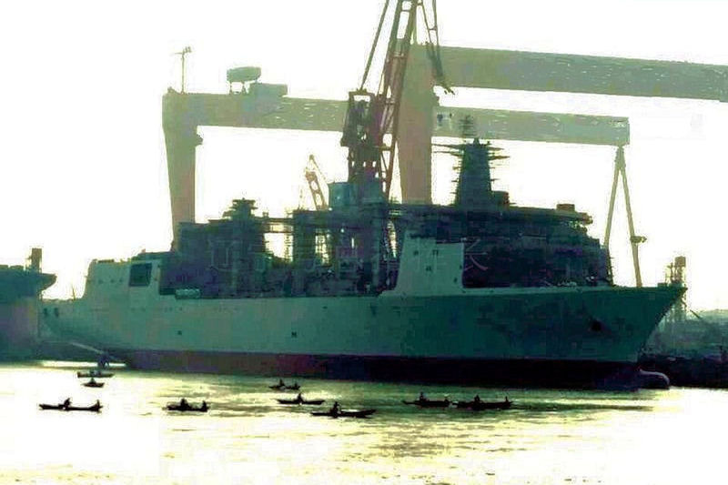 These vessels, along with an escort, will constitute very capable AOR groups for the PLAN carrier strike groups on the high seas.
Go to 5. Submarine Developments of the 2016 PLAN Report RETURN TO MAIN PAGE OF THE 2016 PLAN REPORT
Other links of Interest:
World-Wide Aircraft Carriers
|